The Warner Brothers Niles Connection

Warner family
{kind=link}
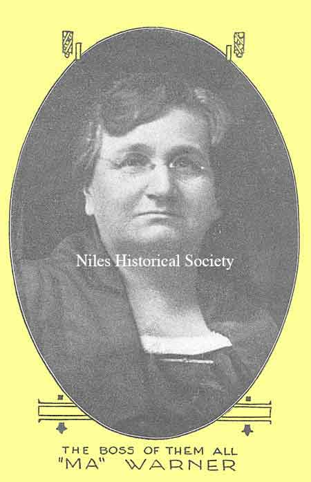
Ma Warner
{kind=link}
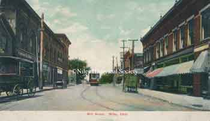
Niles residents remember the boys showing the silent flicks in the Diebel’s Butcher Shop on Mill Street (now State Street).
{kind=link}
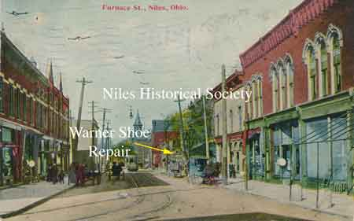
The Warner Theater appears on the left side of picture(See yellow arrow). Before Park Avenue was cut through to the east side when the Warner Theater still had 3 floors.

The Verbeck Theatre was constructed about 1904 on the west side of Furnace or East State Street near Park Avenue.

An article from the Niles Daily News dated September 17, 1920 detailing the fire at the Niles Opera House and the cool reaction of manager Ben Warner. PO1.1371
{kind=link}
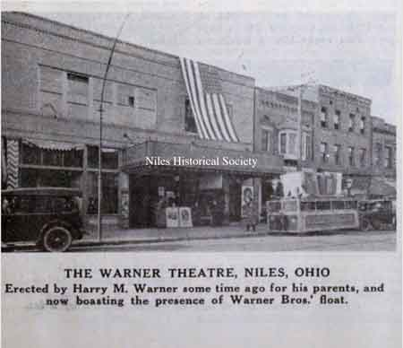
The Warner Theatre, as it appeared in 1921, was built by Harry M. Warner with a Warner Brother's float at the curb on State Street.
{kind=link}
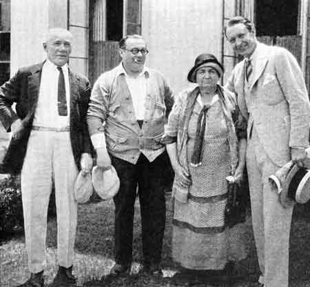
Here are the parents of the Warner brothers with Monte Blue, right, and Willard Louis

Harry, Albert, Sam and Jack Warner pictured in The moving Picture World in 1919.
{kind=link}
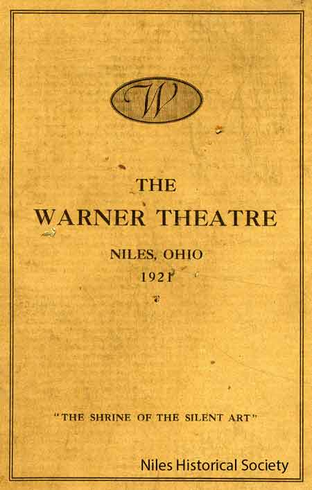
Cover of opening program for the Warner Theatre in Niles, Ohio. 1921

Original text from 1921 opening program of the Warner Theatre in Niles, Ohio.
{kind=link}
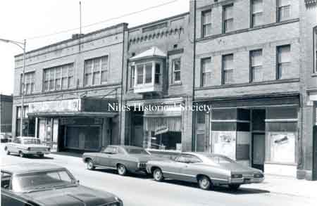
State Street view, looking south, of the Warner Theatre and Solmando Block which was built in 1915.
State Street view, looking south, of the Warner Theatre and Solmando Block which was built in 1915.
{kind=link}
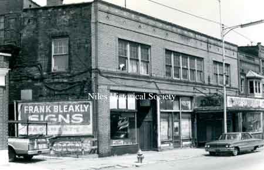
State Street view, looking north, of the Warner Theatre.

The Warner Theater fell into disrepair as evidenced by the photographs taken in 1975; later the building was demolished in 1976 during urban renewal.
{kind=link}
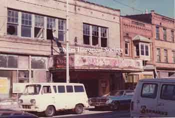
The Warner Theater fell into disrepair as evidenced by the photographs taken in 1975; later the building was demolished in 1976 during urban renewal.

Photo of the keys to the Warner Theater located at 86 East State Street, Niles, Ohio.
{kind=link}
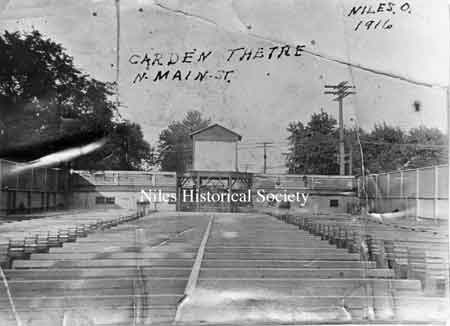
The Garden Theatre was a forerunner of the modern drive-in theatre. Movies were shown in the evening, weather permitting. It was located on North Main Street about where Sparkle Market is now (2001).

Additional Movie Theatres in Niles

The Stafford Theatre was listed in the Burch Directory of 1912 at 125-133 Furnace Street (East State). The building location is north of East Park Avenue.
{kind=link}
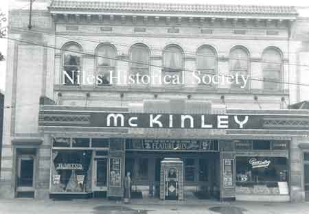
A picture of the McKinley Theatre when it was operating on South Main St. in downtown Niles. 1950 ca. Barton's Candy Store is on the left. In 1953 Jo Reese would open her first flower shop at this location. The McKinley Restaurant is on the right side of the theatre's entrance. The theatre would close in 1960.
{kind=link}
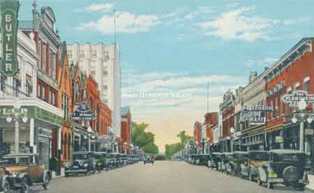
The Butler Movie Theatre was located on South Main Street. The Butler Soda & Grille was located on the south side of the theatre's entrance. 1927
{kind=link}
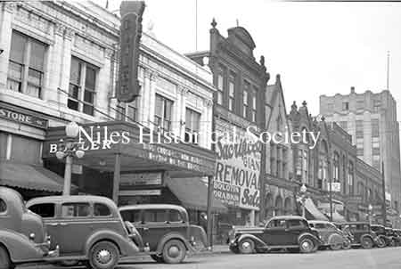
It would later become the Robins Movie Theater. The Butler Movie Theatre was located on South Main Street. Photo dated 1935.

The Butler Soda Grille was located next to the Robins Theatre on South Main Street.
{kind=link}
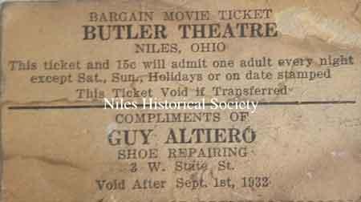